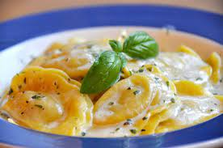

Ravioli

Description
Ingredients
Ravioli Dough
- 2 cups all-purpose flour
- 2 large eggs
- 0.5 teaspoon salt
- 0.25 cup water
Ravioli Filling
- 2 cups fresh spinach, chopped
- 1 cup shredded mozzarella cheese
- 0.5 cup grated parmesan cheese
- 1 egg, beaten
- 2 cloves garlic, minced
- Salt and pepper
Sauce
Steps
- In a large mixing bowl, combine the flour and salt. Make a well in the center and crack the eggs into it. Beat the eggs gently with a fork, gradually incorporating the flour until a dough forms. If the dough feels dry, add water a tablespoon at a time until it comes together.
- Transfer the dough to a floured surface and knead for about 5-7 minutes until it becomes smooth and elastic. Wrap the dough in plastic wrap and let it rest for 30 minutes.
- In the meantime, prepare the filling. In a pan, sauté the minced garlic in olive oil over medium heat until fragrant. Add the chopped spinach and cook until wilted. Remove from heat and let it cool.
- In a mixing bowl, combine the sautéed spinach, shredded mozzarella cheese, Parmesan cheese, beaten egg, and season with salt and pepper. Mix well until all the ingredients are evenly incorporated.
- After the dough has rested, divide it into two equal portions. Take one portion and roll it out into a thin sheet using a rolling pin or pasta machine. Dust with flour as needed to prevent sticking.
- Spoon small portions of the filling onto one half of the rolled-out dough, leaving space between each mound of filling. Brush water around the filling to moisten the dough.
- Fold the other half of the dough over the filling and press down around each mound of filling to seal the ravioli. Use a pastry cutter or a sharp knife to cut out individual ravioli squares.
- Repeat the process with the remaining dough and filling.
- Bring a large pot of salted water to a boil. Add the ravioli to the boiling water and cook for about 3-4 minutes or until they float to the surface. Remove the cooked ravioli with a slotted spoon and set aside.